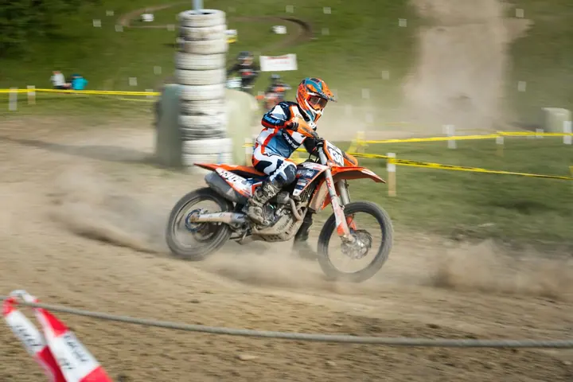
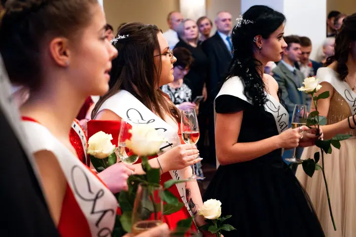

01 / 04
Sportovní a kulturní akce
Fotím koncerty, párty, festivaly, závody i firemní eventy. Zachytím atmosféru a emoce tak, aby fotky fungovaly na sociálních sítích i v další propagaci.
Zeptat se na termín→



Foto a video z akcí v plném proudu
Zeptat se na termín →(01) Ahoj
Jmenuji se Matyáš Voborník a fotím i natáčím akce , sportovní závody a reklamní obsah v Náchodě, Novém Městě nad Metují a okolí. Postarám se o celý proces od focení nebo natáčení až po úpravu, střih a předání, aby výsledek dobře fungoval na sítích, na webu i v kampaních.
(02) Co dělám
01 / 04
Fotím koncerty, párty, festivaly, závody i firemní eventy. Zachytím atmosféru a emoce tak, aby fotky fungovaly na sociálních sítích i v další propagaci.
Zeptat se na termín→02 / 04
Fotím celý večer od nástupu a šerpování až po půlnoční překvapení a parket. Ze stuhování i z tance vzniknou fotky, které si třída nechá na památku.
Zeptat se na termín→03 / 04
Připravím fotky produktů, služeb a prostor pro vaši značku a pomůžu i se správou sociálních sítí, od nápadu na kreativu až po realizaci.
Zeptat se na termín→Dále nabízím
Natáčím aftermovie z akcí, promo a produktová videa, reportáže i prezentační videa pro obce a firmy. Střih a postprodukci dělám sám.
↗(03) Portfolio
Kliknutím fotku zvětšíte · fotografie jsou ilustrační
(04) Postup
Od první zprávy po hotovou galerii.
Krok 1 z 4
Napíšete mi, o jakou akci nebo projekt jde, kdy a kde se koná a k čemu výstupy použijete. Pošlu vám konkrétní cenovou nabídku.
Krok 2 z 4
Domluvíme se na stylu, rozsahu a podobě výstupů, ať už jde o galerii fotek, aftermovie, nebo obsah na sociální sítě.
Krok 3 z 4
Na místě pracuji nenápadně a sleduji, co se děje, abych zachytil atmosféru akce i důležité detaily.
Krok 4 z 4
Fotky upravím, video sestříhám a výstupy připravím tak, aby dobře fungovaly na webu, sítích i v další propagaci.

Atmosféra, emoce a důležité momenty akce

(05) Za objektivem
Jsem fotograf a kameraman z Náchoda. Pod značkou Vobornik Media production tvořím fotky a videa z akcí a eventů, portréty, reportáže, akční scény, aftermovie i reklamní obsah. Fotím hlavně na Náchodsku, ale za zakázkou rád dojedu i dál.
Každou zakázku přizpůsobuji tomu, k čemu má sloužit. Jinak se fotí maturitní ples, jinak motokros a jinak kampaň pro kosmetický salon. Chci, aby výsledné fotky a videa nejen dobře vypadaly, ale taky vám přinesly výsledky.
Kromě focení a natáčení stříhám videa, upravuji fotografie, točím krátké spoty a pomáhám značkám se sociálními sítěmi. Natočil jsem třeba prezentační video zámku v Novém Městě nad Metují nebo video pro obec Provodov-Šonov.
Matyáš
Matyáš Voborník · Fotograf a kameraman akcí a reklamy
Orientačně stojí focení 4 000 až 11 000 Kč a natáčení 5 000 až 12 000 Kč. Přesná cena záleží na rozsahu, proto mě kontaktujte pro konkrétní nabídku.
Ano. Působím hlavně v Náchodě, Novém Městě nad Metují a okolí, ale dojíždím i do vzdálenějších lokalit.
Ano, fotím i natáčím. Z jedné akce tak můžete mít galerii fotek i aftermovie a nemusíte shánět dva dodavatele.
Ano. Kromě focení a natáčení se starám o kreativu, střih krátkých videí a obsah pro sociální sítě. S některými značkami spolupracuji dlouhodobě.
(07) Kontakt
Napište pár vět o tom, co si představujete, a termín, který se vám hodí.